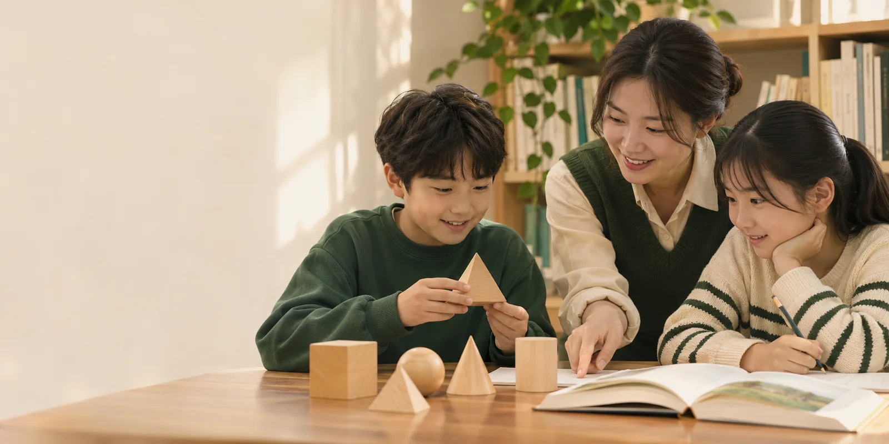
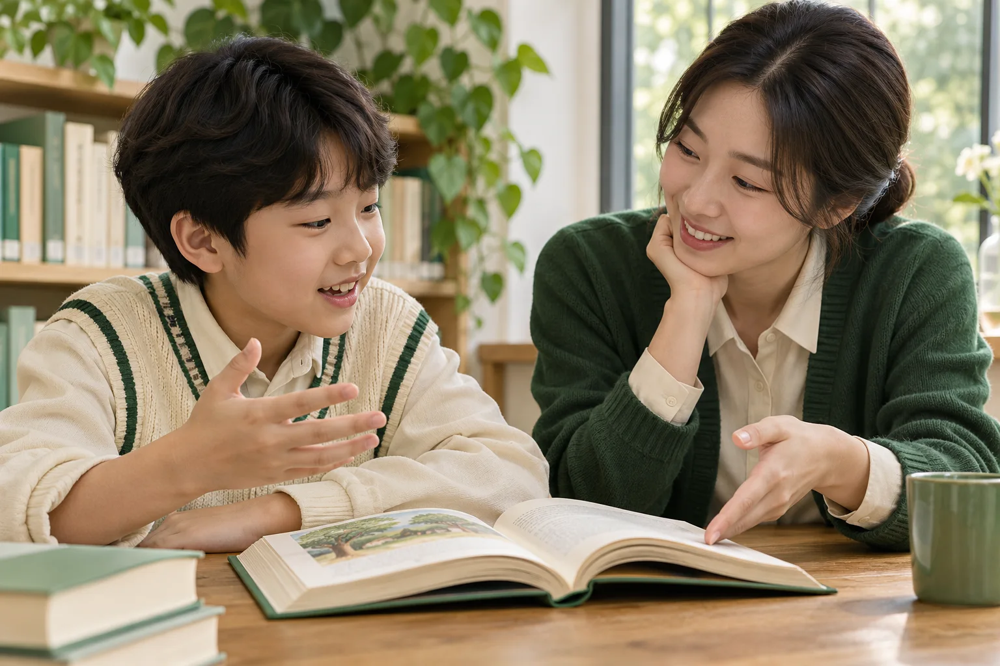
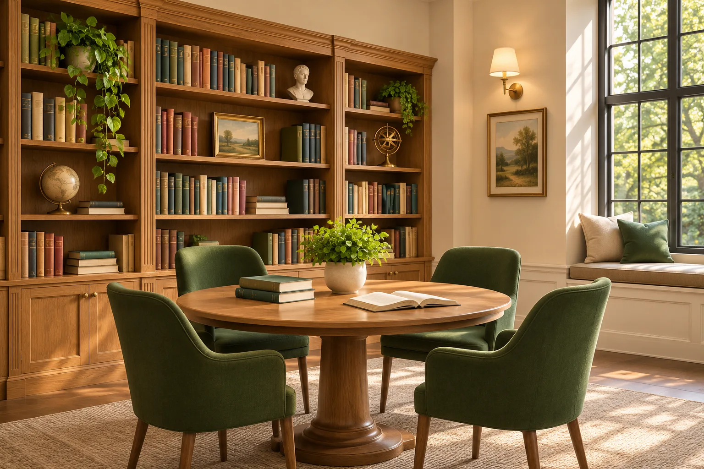

아이의 속도를 존중합니다
같은 진도보다 지금의 이해를 살피고, 부족한 기초와 더 깊은 배움을 함께 챙깁니다.

HANA · MATH & READING
스스로 풀어내는 수학과
자신의 말로 표현하는 독서.
아이의 배움에 단단한 뿌리를 만듭니다.
OUR PHILOSOPHY
답을 듣는 아이에서,
답을 찾아가는 아이로.
문제를 읽고 조건을 찾으며 여러 방법을 시도하는 시간.
책 속 이야기를 나의 경험과 연결하고 말로 풀어보는 시간.
하나는 작은 질문과 필요한 만큼의 힌트로 아이의 생각을 돕습니다. 조금 느리더라도 스스로 이해한 경험이 다음 배움의 바탕이 되도록 지도합니다.
블로그에서 교육 철학 읽기 ↗같은 진도보다 지금의 이해를 살피고, 부족한 기초와 더 깊은 배움을 함께 챙깁니다.
정답을 확인하는 데서 한 걸음 더. 어떤 방법으로 풀었는지 직접 설명해 봅니다.
어휘를 만나고, 책에서 이해하고, 말과 글로 다시 표현하며 배움을 연결합니다.
OUR PROGRAMS
학년뿐 아니라 이해도와 학습 경험을 함께 살핍니다.
자세한 반 편성과 수업 일정은 상담에서 안내합니다.
대상은 블로그에서 확인한 수업 사례를 기준으로 안내합니다. 현재 모집 학년·반 편성은 전화로 확인해 주세요. 수업 이미지는 AI 제작 이미지입니다.

교육 철학을 표현한 AI 이미지HOW WE LEARN
낯선 어휘와 문제의 조건을 살피며 배움의 출발점을 찾습니다.
교구와 그림, 질문을 통해 개념을 이해하고 직접 해결해 봅니다.
풀이를 말로 설명하고, 배운 어휘로 글을 쓰며 이해를 다집니다.

ROOM TO GROW
한 번 더 시도하고, 자신의 생각을 꺼내는 경험.
하나가 함께 키우고 싶은 배움의 모습입니다.
학습 분위기를 표현한 AI 콘셉트 이미지이며 실제 학원 시설 사진이 아닙니다.
HANA JOURNAL
QUESTIONS & ANSWERS
아이의 현재 모습부터
편하게 이야기해 주세요.
블로그에서 안내하는 개별 진도 수업은 아이의 이해도와 앞선 학습량을 고려합니다. 지금 어려워하는 단원과 학습 경험을 말씀해 주시면 적합한 수업을 상담할 수 있습니다.
도형과 규칙 찾기, 퍼즐 등 관찰하고 비교하는 활동을 중심으로 생각하는 힘을 기릅니다. 정확한 입학 연령과 모집 여부는 전화 상담에서 확인해 주세요.
책을 읽기 전 어휘를 살피고, 읽으면서 다시 만나며, 읽은 뒤 대화·발표·짧은 글쓰기로 활용합니다. 자신의 생각을 표현하는 경험까지 연결합니다.
현재 학년과 희망 과목을 알려주시면 전화로 안내받으실 수 있습니다. 확인되지 않은 시간표와 수강료는 홈페이지에 표시하지 않습니다.
최근 학원 소식에는 중학생 대상 안내도 있습니다. 중등의 현재 과목·담당·모집 학년은 상세 확인이 필요하므로 전화로 문의해 주세요.
LET'S TALK ABOUT YOUR CHILD
학년, 관심 과목, 요즘의 학습 고민을 알려주세요.
아이에게 맞는 배움의 방향을 함께 살펴보겠습니다.